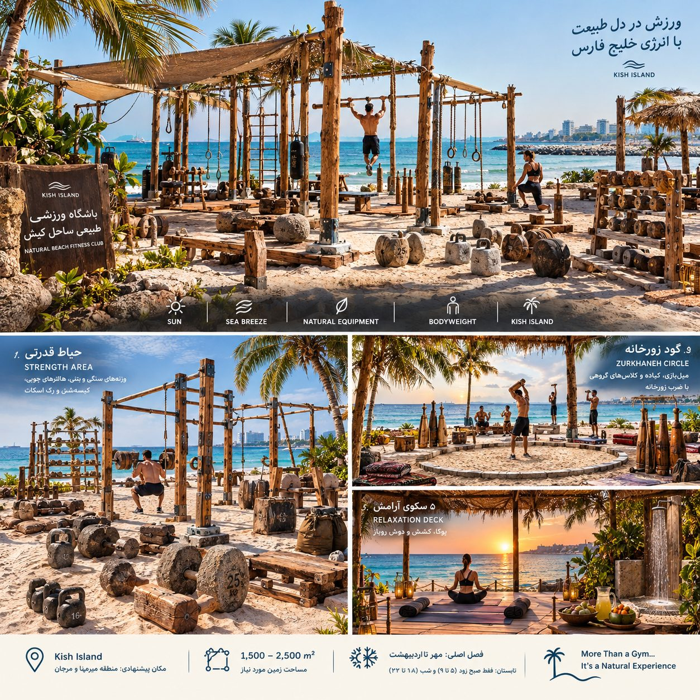

یک باشگاه روباز کنار دریا، بدون دیوار و بدون دستگاه برقی. همه وسایل با دست ساخته میشوند: از چوب، سنگ، بتن، طناب و آهن آهنگریشده. ورزش با نور خورشید، نسیم دریا و وزن بدن خودت.

چیزی که میفروشیم یک تجربه است، نه فقط باشگاه. ورزش در طلوع و غروب کنار خلیج فارس، با وسایلی که انگار از خود طبیعت آمدهاند. هیچ باشگاه سرپوشیدهای در کیش نمیتواند این را کپی کند.
اسمهای پیشنهادی: ساحل · زورخانه دریا · سنگ و چوب کیش · پهلوان ساحل
پنج بخش اصلی از کنار آب تا ورودی چیده شدهاند. بخش بانوان جدا و با دیواره نی پوشیده است.
۱۷ نوع وسیله برای افتتاح کافی است و کل آن حدود ۱۳٬۴۰۰ دلار میشود (تقریبی). یک نجار، یک آهنگر و یک استادکار بتن از کیش یا بندرعباس کافی است. اول نمونه بسازند و مربی امتحان کند، بعد همه را بسازند.
| وسیله | تعداد | جنس | سازنده | هزینه تقریبی (دلار) |
|---|---|---|---|---|
| سازه کالیستنیکس (بارفیکس، دیپ، نردبان افقی) | ۱ بزرگ | آهن گالوانیزه + چوب | آهنگر + نجار | ۳٬۰۰۰ |
| سکوی آرامش، نیمکت و قفسه وسایل | ۱ ست | چوب | نجار | ۲٬۰۰۰ |
| دمبل سنگی و بتنی (۵ تا ۴۰ کیلو) | ۱۶ جفت | بتن + میله آهنی | بتنکار + آهنگر | ۱٬۲۰۰ |
| رک اسکات و پرس | ۳ | تیر چوبی + گیره آهنی | نجار + آهنگر | ۱٬۲۰۰ |
| میل زورخانه (۵ تا ۲۰ کیلو) | ۱۵ جفت | چوب سخت | خراط | ۹۰۰ |
| صفحه وزنه بتنی روی میله | ۴ ست | بتن + آهن | بتنکار + آهنگر | ۹۰۰ |
| کتلبل بتنی (۸ تا ۳۲ کیلو) | ۱۲ | بتن + آهن | بتنکار + آهنگر | ۶۰۰ |
| هالتر کنده درخت | ۴ | چوب سخت + آهن | نجار + آهنگر | ۵۰۰ |
| کیسهشن و یوغ حمل | ۱۰ + ۱ | برزنت/چرم، چوب | چرمدوز + آهنگر | ۵۰۰ |
| کباده زورخانه | ۴ | آهن آهنگریشده | آهنگر | ۴۰۰ |
| جعبه پرش | ۸ | چوب | نجار | ۴۰۰ |
| سنگ اطلس (۴۰ تا ۱۲۰ کیلو) | ۶ | بتن ریختهگری | بتنکار | ۳۰۰ |
| پارالل و پارالت | ۶ | چوب سخت | نجار | ۳۰۰ |
| حلقه ژیمناستیک و طناب بالارونده | ۶ + ۳ | چوب، طناب کنفی | نجار | ۳۰۰ |
| تخته شنای زورخانه | ۲۰ | چوب سخت | نجار | ۳۰۰ |
| سورتمه چوبی برای کشیدن | ۴ | چوب + طناب | نجار | ۳۰۰ |
| طناب نبرد (بتل روپ) | ۴ | طناب کنفی | خرید + تمامکاری دستی | ۳۰۰ |
| جمع | ۱۳٬۴۰۰ | |||
بهترین جا ساحل جنوب یا شرق جزیره، نزدیک هتلها و بازارها (مثلاً منطقه میرمهنا و مرجان) است؛ جایی که گردشگرها پیاده رد میشوند.
تابستان کیش حدود ۳۵ تا ۴۵ درجه و شرجی است (تقریبی).
گردشگرها تعداد زیاد و قیمت بالاتر میآورند؛ ساکنان جزیره درآمد ماهانه ثابت. قیمتها پیشنهادیاند و باید با بازار روز چک شوند.
| گروه مشتری | چه میخواهند | پیشنهاد ما | قیمت (تومان) |
|---|---|---|---|
| گردشگر (۱ تا ۷ روز) | تجربه متفاوت و عکس | بلیط یکروزه، کلاس طلوع و غروب | ۴۰۰ تا ۷۰۰ هزار هر جلسه |
| ساکنان و کارکنان جزیره | تمرین منظم و جمع دوستانه | عضویت ماهانه | ۲٫۵ تا ۴ میلیون در ماه |
| مهمانان هتلها | ورزش نزدیک هتل | کوپن هتلهای طرف قرارداد | ۳۰۰ هزار (عمده) |
| ورزشکاران و رزمیکاران | آمادگی بدنی و قدرت | اردوی ۱ تا ۲ هفتهای | ۸ تا ۱۵ میلیون |
| شرکتها و گروهها | کار تیمی و تفریح | کلاس خصوصی زورخانه یا بوتکمپ | از ۱۵ میلیون |
| تولیدکنندگان محتوا | لوکیشن خاص | مجوز عکاسی و فیلم | ۲ میلیون در ساعت |
درآمد جانبی: مربی خصوصی، کیوسک شربت و خرما، تیشرت و حوله با لوگو، و فروش میل و کتلبل دستساز به عنوان سوغاتی.
زمین ساحلی مال سازمان منطقه آزاد کیش است و فقط اجاره داده میشود. قبل از هر هزینهای، اینها را بگیرید:
طبق قوانین ایران ورزش مختلط مجاز نیست. دو راه داریم:
پیشنهاد: با سانسبندی شروع کنید و اگر تقاضا بالا بود بخش دوم را بسازید.
| نقش | تعداد | کار |
|---|---|---|
| مدیر (خود شما) | ۱ | فروش، هتلها، حسابوکتاب |
| مربی آقا | ۲ | کلاسها و مربی خصوصی |
| مربی خانم | ۱ تا ۲ | سانسها و بخش بانوان |
| مرشد زورخانه (پارهوقت) | ۱ | کلاس زورخانه با ضرب در غروب |
| استادکار نگهداری | ۱ | روغنکاری چوب، تعمیر، تمیزی |
| کیوسک و پذیرش | ۱ | بلیط، شربت، سوغاتی |
| نجاتغریق (فصلی) | ۱ | ایمنی شنا |
خود جا تبلیغ است. هر کس آنجا عکس بگیرد، باشگاه را معرفی کرده.
کل سرمایه لازم حدود ۶۵ هزار دلار است (تقریبی، به خاطر نوسان ارز به دلار نوشته شده). اگر حسابها درست باشد، سرمایه در حدود ۱۸ تا ۲۴ ماه برمیگردد.
| بخش | هزینه تقریبی (دلار) |
|---|---|
| سایبانها، سکوی چوبی، پایههای بتنی، دوش | ۱۵٬۰۰۰ |
| وسایل دستساز | ۱۳٬۴۰۰ |
| سرمایه در گردش ۳ ماه اول | ۱۲٬۰۰۰ |
| ودیعه اجاره زمین و مجوزها | ۸٬۰۰۰ |
| کیوسک، نور خورشیدی، آب | ۶٬۰۰۰ |
| هزینه پیشبینینشده (حدود ۱۰٪) | ۶٬۰۰۰ |
| برند، سایت و تبلیغ افتتاحیه | ۴٬۰۰۰ |
| جمع | ۶۴٬۴۰۰ |
در تابستان درآمد گردشگر تقریباً صفر میشود؛ برای همین سرمایه در گردش لازم است. همه اعداد باید با قیمت واقعی کیش دوباره حساب شوند.
| ریسک | راهحل |
|---|---|
| مجوز زمین ساحلی دیر بیاید یا داده نشود | قبل از ساخت وسایل، قرارداد زمین را بگیرید؛ با هتلی که ساحل اختصاصی دارد شریک شوید. |
| گرمای تابستان و کم شدن مشتری | ساعت کاری کوتاه، اردوهای ورزشی زمستانه، تخفیف عضویت سالانه. |
| نمک، رطوبت و طوفان | آهن گالوانیزه، روغنکاری منظم، وسایل سبک را شبها در انبار چوبی بگذارید. |
| تورم و نوسان ارز | وسایل را زود و یکجا بخرید؛ قیمتها را هر فصل بهروز کنید. |
| آسیب ورزشکار با وسایل دستساز | امتحان هر نمونه، بیمه، کف نرم، حضور همیشگی مربی. |
| کپی شدن ایده | برند قوی، داستان استادکارها و جامعه اعضا را کسی نمیتواند کپی کند. |
هدف: افتتاح در شروع فصل خنک (مهر ۱۴۰۶)، حدود ۶ تا ۹ ماه از امروز.
این متنها را در Midjourney، DALL·E، Leonardo یا ابزار ویدیو مثل Sora، Runway و Kling بچسبانید. نسخه انگلیسی معمولاً نتیجه بهتری میدهد.
Wide cinematic photo of an open-air beach gym on Kish Island, Iran, at golden sunrise. No walls, no machines. All equipment is handmade: a calisthenics pull-up rig of dark oiled hardwood posts with hand-forged rusted-iron bars and wooden gymnastic rings on hemp rope, concrete kettlebells and round concrete atlas stones resting on white sand, log barbells, Persian zurkhaneh wooden meel clubs. Palm-frond and reed shade canopies on timber poles, canvas shade sails, a raised wooden yoga deck, turquoise Persian Gulf water and small waves behind, palm trees, warm natural light, rustic, earthy, eco-friendly, natural materials, documentary style, 35mm lens, high detail, photorealistic --ar 16:9
Close-up product photo of handmade gym equipment on beach sand: a cast-concrete kettlebell with a hand-forged black iron handle, its weight "16 kg" stamped into the concrete, next to a pair of turned hardwood Persian meel clubs and a rough log barbell with iron sleeves. Craftsman's mark carved in the wood. Soft late-afternoon light, shallow depth of field, turquoise sea blurred in background, texture of wood grain and concrete visible, photorealistic --ar 4:5
A group of men in traditional zurkhaneh outfits swinging wooden meel clubs in a circular sunken sand ring on a beach at sunset on Kish Island, Iran. A drummer with a zarb drum sits under a palm-frond canopy. Orange and purple sky, sun setting into the Persian Gulf, warm lanterns glowing on timber posts, silhouettes, sand in the air, cinematic, photorealistic --ar 16:9
Women in modest athletic wear with sport hijabs training with handmade concrete kettlebells and wooden plyo boxes in a private beach gym area screened by tall woven reed walls and green plants, on Kish Island, Iran. Morning light, palm shade, turquoise sea glimpsed above the reed walls, friendly and energetic mood, natural materials, photorealistic --ar 3:2
A 25-second cinematic promo video for a handmade open-air beach gym on Kish Island, Iran. Shot list: 1) Dawn, drone shot gliding over turquoise Persian Gulf toward a sandy beach with palm-frond canopies and a wooden pull-up rig. 2) Close-up in a workshop: a blacksmith hammering a glowing iron kettlebell handle, sparks flying. 3) A carpenter turning a wooden meel club on a lathe, wood shavings falling. 4) Wet concrete poured into a round mould to make an atlas stone. 5) Sunrise: an athlete doing pull-ups on the wooden rig, sea behind him. 6) Slow motion: bare feet sprinting on sand pulling a wooden sled. 7) Sunset: a zurkhaneh group swinging meel clubs to the beat of a zarb drum. 8) Final wide shot at dusk, warm lanterns lighting up, text appears: "Built by hand. Trained by nature." Style: warm natural colors, real textures, handheld documentary feel mixed with smooth drone shots, Persian percussion soundtrack, 16:9, 4K.
عکس واقعی و سینمایی از یک باشگاه ورزشی روباز کنار ساحل جزیره کیش در طلوع آفتاب. بدون دیوار و بدون دستگاه. همه وسایل دستساز: سازه بارفیکس با تیرهای چوب تیره و میلههای آهن آهنگریشده، حلقههای چوبی روی طناب کنفی، کتلبل و سنگهای گرد بتنی روی شن سفید، هالتر کنده درخت، میلهای چوبی زورخانه. سایبان برگ نخل و نی روی تیرهای چوبی، سکوی چوبی یوگا، آب فیروزهای خلیج فارس و درخت نخل در پسزمینه. نور گرم و طبیعی، حس روستایی و طبیعی، جزئیات زیاد.
همه اعداد این صفحه تقریبیاند و از تجربه عمومی آمدهاند، نه از تحقیق میدانی در کیش. قبل از تصمیم، آنها را چک کنید.